Soaring with FSX >> GPS
This tutorial is to help you set up the GPS in the plane you use in your mission, so that it directs you to the waypoints you've set up.
A particular issue with soaring missions is that they usually start and end at the same airport, and the intermediate waypoints are not airports but you want the lat/long of those waypoints to exactly match the mission waypoints.
That process is described in more detail with screenshots below.
Step ZERO Make sure you know the exact lat/longs of your start/finish points and each waypoint, either by inspecting WorldPositions in the Mission Object Placer, or looking at the mission .xml file.
1. Enter “Free Flight” in game. If you already have a mission you can just load it from here and skip to Step 3. If you are creating a new mission, continue...
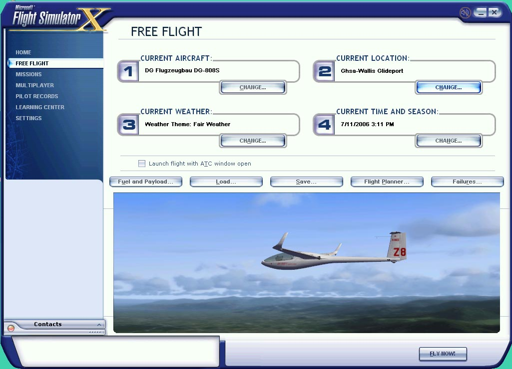
2.
A. Select "CURRENT AIRCRAFT" and change to glider of choice.
B. Select "CURRENT WEATHER" and edit as desired.
C. Select "CURRENT LOCATION" and change to airport you plan to fly from. (Example: TE71)
D. Select "CURRENT TIME AND SEASON" change to what suits your fancy.
All these variables can be changed later. This is just a starting point.
a. Choose “departure” airport. It will be the same airport you initially selected in the first screen. E.g. we will set up a course from Texas airfield TE71.
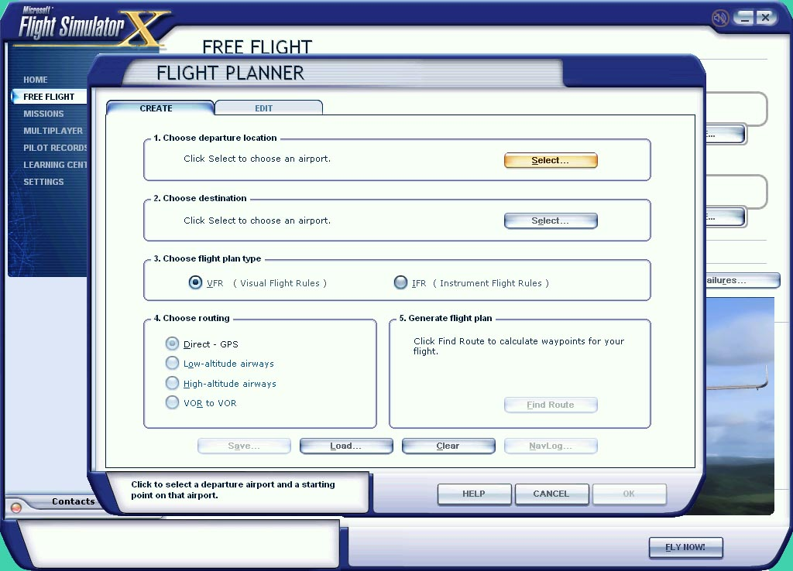
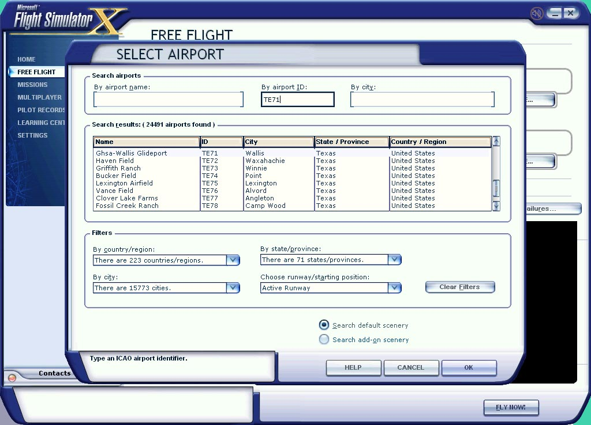
b. Choose “destination” airport. Since you can’t make waypoints in the route builder while flying "From and To" the same airport, select a different airport that is not too far away. You will delete this later anyway.
In this example I’ll select TA97 since it’s the next closest airfield. Go ahead and select an airport.
c. Now, click on “Find Route”. You will see a red, straight line route between the two airports
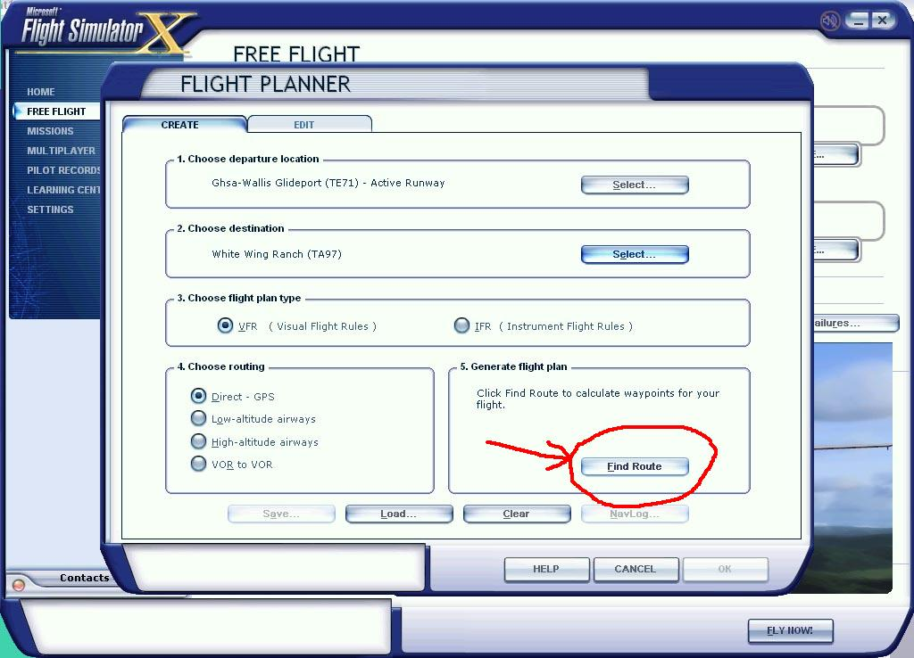
d. Inserting your waypoints. Grab the red line with your mouse (left click) and drag it close to the point you want the first waypoint. You can change the zoom of the map if you can’t see the are you want. Once you let go of the left mouse button it will create WP1.
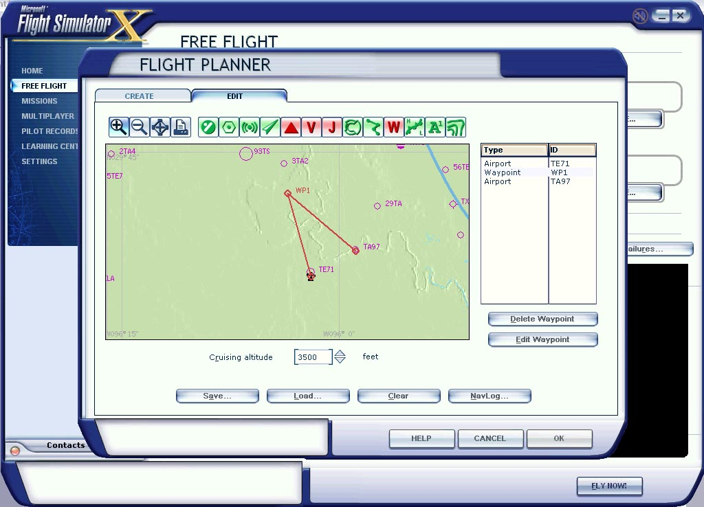
If you drop the waypoint over and airfield, intersection of airspace boundary, it will ask if this is what you want and make that the waypoint with it own identifier.
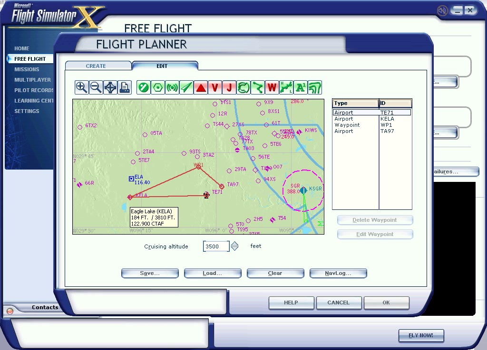
If you don’t like this waypoint you can select it in the right column and delete it or change it in notepad later. If you have the correct Lat./Long., you can edit it in game at this time along with any other waypoints you create. Note it is probably easier to get the lat/longs correct (i.e. the same as your mission POI's) by editting the waypoints here than by later editting the .PLN file in Notepad, but either approach works.
e. Now SAVE the route! In this example it will default to save the route as “VFR Ghsa-Wallis Gliderport to White Wing Ranch.pln”. You will want to rename and save this to the name of your mission. I will choose “SWHouston”. Click “Okay”. It will ask if you want you plane moved to the departure airport (yes) and you will be back to the main “Free Flight” screen.
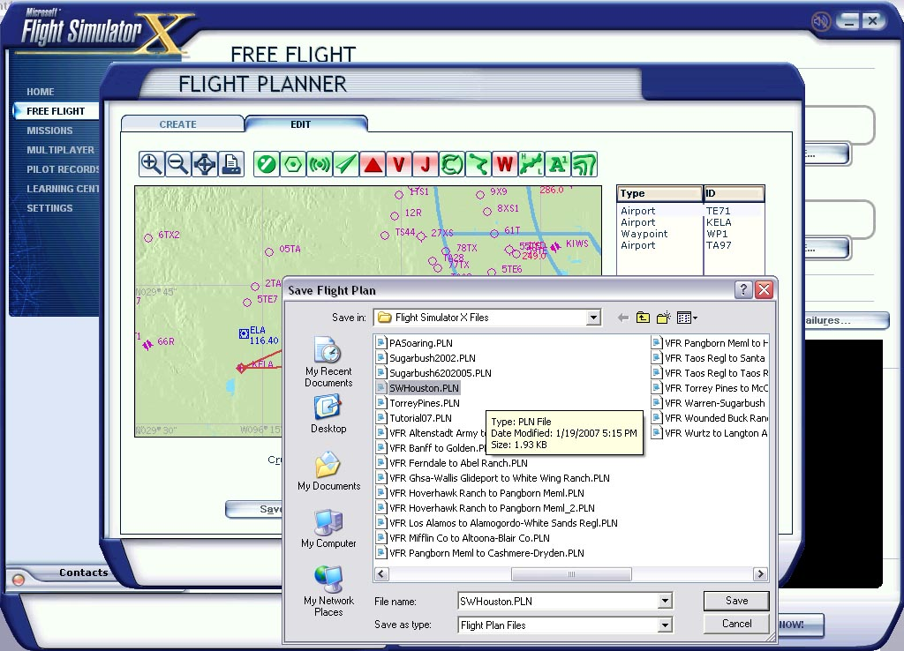
f. Now that we're back to the main "Free Flight screen", it’s time to save everything. Click “Save” and save this “flight” as the same name as the “plan” file you created. You don’t have to, but it makes it easier to keep track. You can add text in the description box at this time if you like.
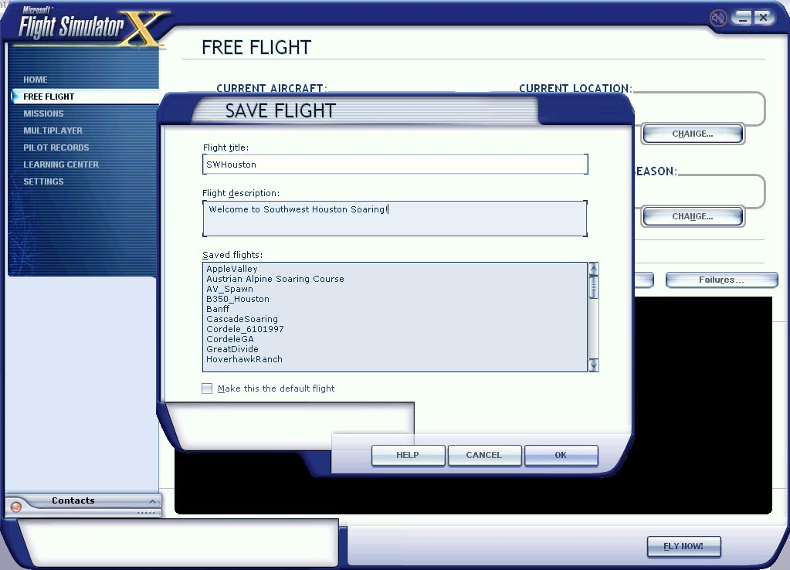
4. Now we will do some editing in notepad. Browse to: C:\Documents and Settings\..xxx..\My Documents\Flight Simulator X files\
Here you will find all your .FLT, FSSave, .WX and .PLN files.

a. The first main file we need to edit is the .PLN file. Open it up with Notepad.
b. Below is what the file looks like for this mission. I modified the screenshot to highlight all the destination airport data that needs to be changed for a Round Robin flight back to the departure airport. Just copy and paste all the identifier and lat./long. data from the departure to destination. This is a fairly simple file when you look at it carefully, with an entry for each waypoint. You are just modifying it to run from TE71 to TE71, instead of TE71 to TA97 and the required data for 'destination' is conveniently the same layout as the existing 'departure'. Note that at this time you can also fix up the lat/longs of the intermediate waypoints if you didn't do that when you created the route plan.
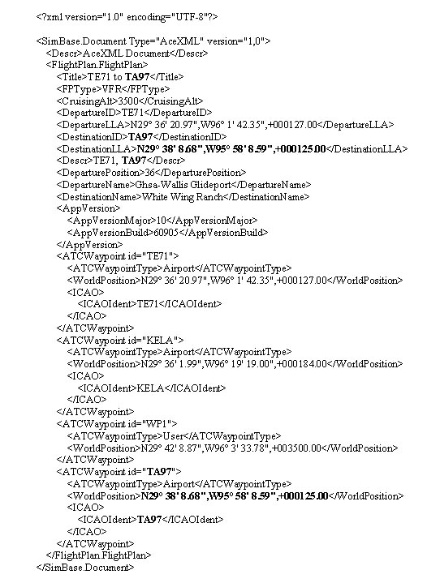
c. Now it should have all destination data , in blue, as the same data as departure data like the image below.
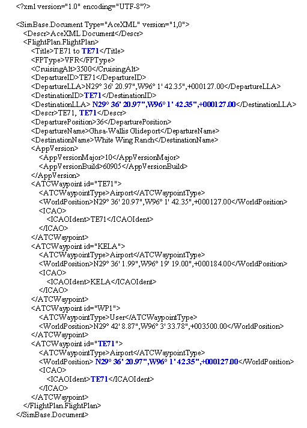
d. Close the file and save changes.
5. Now we check our work. Open the game back up and go to “Free Flight” and load the flight (Mine is SWHouston).
6. Click on “Flight Planner” and you should see the departure and destination airports being the same. DO NOT click on “Find Route”! If you do you won’t see your flight plan. You can reload it again though. Instead, click on the “Edit” tab on the top. We now see our flight plan departing and returning to the same airport. You can edit the waypoints again if you want, or add more at this time. You cannot edit waypoints that are airports or intersections. Only waypoints that are named WP1, WP2, etc.. Just be sure to save the file to the same name again.
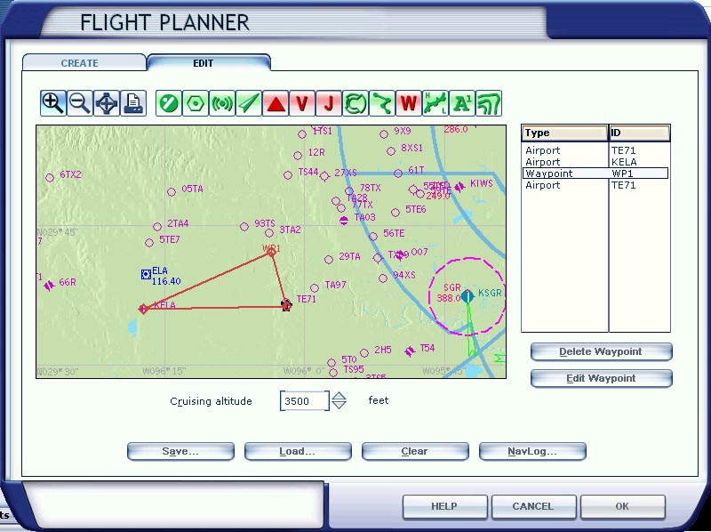
7. Exit out and be sure SAVE the “flight” AGAIN to the same name. This will make a change to the .FLT file so it will see the correct GPS data and it will sync to the .FLT file.
Copy the .FLT, .WX, .PLN files across from your "My Documents/Flight Simulator Files X/" folder into your mission folder.
Edit the .FLT file so that the GPS directory reference to "My Documents/Flight Simulator Files X/" is deleted. I.e. in a GPS section a reference to "My Documents/Flight Simulator Files X/SWHouston" should be changed to "SWHouston" i.e. the name of the .PLN file without the .PLN suffix. While you're in the .FLT file, make sure you put the [ObjectFile] reference to the mission in there - presumably you know about this is you're creating missions...
You might want to go ahead and actually fly the mission just to make sure it’s all loaded and synchronized properly.
8. You now have the .FLT and .PLN files matched with the GPS.
*The Garmin switches to the next waypoint when you cross the bisector of the inbound and outbound legs to/from that waypoint.
Brought to you by Beeg, vast amout of secretarial editting by B21.